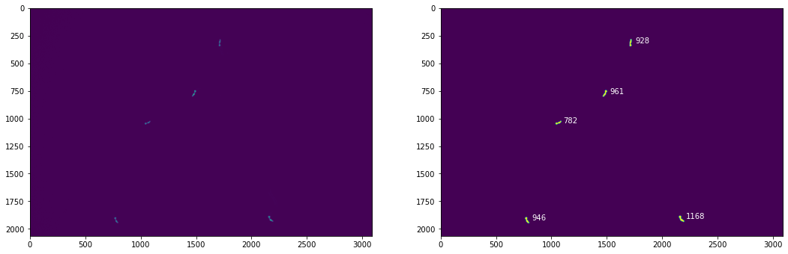
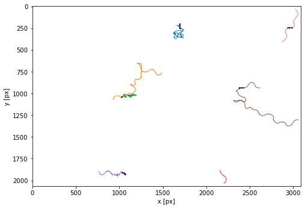
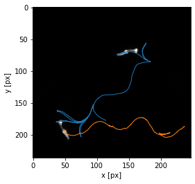
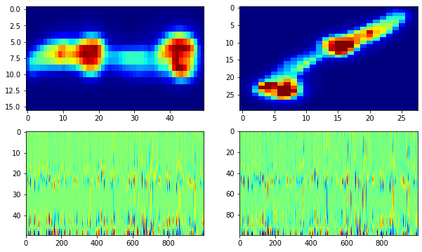
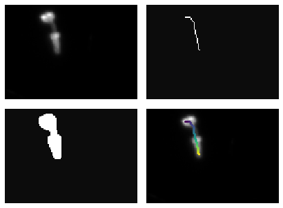
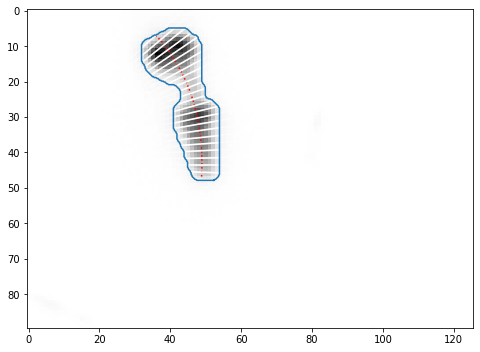
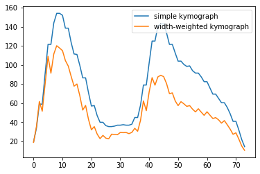
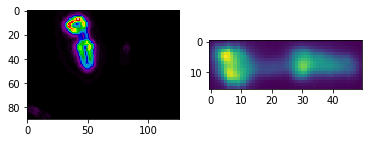
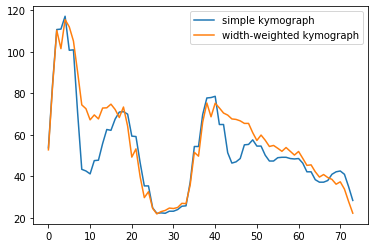

PharaGlow
Package to track and analyze C. elegans pharynx from movies. Tracking is based on the package trackPy (http://soft-matter.github.io/trackpy/v0.4.2/). The package can be used to simply track labelled pharynxes or as a simple center of mass tracker for brightfield, but it also has a pipeline to extract pharyngeal pumping and features of the pharynx. Typical use is by interacting through the notebook which contains the whole pipeline from raw movies to final data. It comprises three stages on analysis which can be done sequentially and are independent. Analyses can be interrupted at the end of each stage after saving the output dataframe. The package can analyze recording up to 25 worms for 15 minutes at 30 frames per second (1x).
1. Step - Basic object detection This step creates a “_features.json” file which contains a table of objects detected in each frame. Beyond finding the center of mass of an object, no further image analysis is done here.
2. Step - Linking objects into trajectories This results in individual files “_trajectory.json” for each tracked animal.
3. Step - Analyzing the details of object shapes This step is doing the heavy lifting: It extracts centerlines, widths, contours and other object descriptors from the objects
All subsequent analyses steps add ‘columns’ to the data, and thus features is a subset of trajectories is a subset of results.
Installation
create an anaconda environment
conda env create --file environmentPumping.yml
Install pharaglow - clone the repo and navigate into the directory PharaGlow.
git clone [...]
python setup.py install --user
(optional, for developers, replace myenv with the name of the environment, eg. environmentPumping): to create a dedicated environment kernel
conda activate myenv
python -m ipykernel install --user --name myenv --display-name "Python (myenv)"
and to remove notebook output before committing
conda install -c conda-forge nbstripout
Quick Start
Before analyzing your data, check your installation and familiarize yourself with the code. Obtain a copy of a test dataset with 1000 frames of 1x magnification, showing animals expressing myo-2::mCherry. (Lab Dropbox/Data).
Start a jupyter notebook server
open the notebook notebooks/RunningPharaGlowMain.ipynb
alter the paths in the cell labeled ‘input parameters’ to point to the data and the output locations, as well as the AnalysisParameter file (see below)
run the notebook. The first few cells are pretty fast, but feature detection can take tens of minutes (depends on your computer and nWorkers. It takes 3 minutes on an Intel I9, 5 workers) The output of masks looks like this for frame 10 using the default AnalysisParameters.  The resulting trajectories look like this before filtering by a minimal duration: 
Pharaglow parameter file
Pharaglow uses a json parameter file to expose parameters that are allowed to be changed by you. A default file comes with the repository, you can use it as a starting point (AnalysisParameters_1x) These parameters are: { “subtract”:0, “smooth”: 3, “thresholdWindow”: 100, “bgWindow”: 100, “dilate”: 1, “tfactor”:0.8, “length”:100, “searchRange”: 20, “minimalDuration”: 900, “memory”: 30, “minSize”:750, “maxSize”:1500, “watershed”: 70, “widthStraight”:10, “pad”:5, “nPts”:100, “linewidth”:2 }
Parameters for detection
bgWindow (frames) - calculate a static background on every nth image of the movie. If this is too short, you get a memory error. It can be as large as 500 frames for a full 18000 frame movie.
subtract (0 or 1) - subtract the background from the movie for detection. Helps particularly with the higher resolution movies.
thresholdWindow (frames) - to get a threshold for binarization, use every nth frame of the movie.
smooth (integer 0 - inf px) - should the image be smoothed. This helps to avoid breaking up the pharynx into two parts.
dilate (integer, >=1) - binary dilation of the image. Can help to connect the worm if its broken up into two pieces.
minSize (px) - remove all objects smaller than this
maxSize (px) - remove all objects larger than this (but a caveat here is when we have worm collisions where we allow the resulting segmentation to be a bit bigger)
watershed (px) - when two or more worms touch, how large is an individual approximately
tfactor (float, positive, smaller than 1) - use rarely. If you have disparate sizes the automated threshold doesn’t work well. This factor multiplies the threshold value for binarization. Eg. for an 8-bit image, if the threshold is 150 and tfactor is 0.5 the image would be thresholded at 150*0.5=75.
length (px) - this sets the size of the extracted images around the center of the worm. It should be at least as large as the largest expected worm length
Parameters for tracking
searchrange (px) describes how much we expect a worm to move frame-to-frame when we link particles together during tracking. This can be a bit bigger to allow for loosing the worm for a bit, but then you might get large perceived jumps in velocity.
memory (frames) - when we loose a worm for a few frames, how long can gaps be until we call it a ‘new’ worm
minimalDuration (frames)- filters out worm trajectories that are shorter than this.
Parameters for pharynx feature extraction
widthStraight - how wide is a worm for the straightened image
pad - crops a boundary around a worm for image analysis. this helps when the mask is a bit too small.
nPts - how many points along the centerline are we measuring. This should relate to the typical length of a worm
Batch running multiple files with the same parameters
(Based on the module papermill for running jupyter notebooks with many parameters).
Edit the notebooks/runBatch,py to the appropriate locations and parameter files. It will analyze a dataFolder where multiple folders of tifffiles are located. eg. a dataFolder containing 3 movies in subfolder1, subfolder2, subfolder3
The code that will be run is called notebooks/BatchRunTemplate.ipynb. This is functionally the same as the code in notebook/RunningPharaglowParallel.ipynb
Batch running multiple files with the same parameters (Option 1)
run the batch processing in the commandline like this:
python runBatchParallel.py
For each subfolder a notebook file with the plots will be generated! This makes it easy to check if tracking was successful.
This script runs multiple notebooks in parallel. This works better in windows OS than parallelization within the notebook (Option 2)
Batch running multiple files with the same parameters (Option 2)
run the batch processing in the commandline like this:
python runBatch.py
Here you use multiple workers (nWorkers variable) to use parallelization within each notebook. Only one notebook is run at a time.
You should see a progress bar that indicates where the script is in processing the template jupyter notebook.
Running pharaglow on labelled pharynx movies
Tracking worms with PharaGlow
This code generates a pandas dataframe that contains the particles that were tracked.
%matplotlib inline
import numpy as np
import pandas as pd
import pims
# image io and analysis
import json
from skimage.measure import label
# plotting
import matplotlib as mpl
import matplotlib.pyplot as plt
#our packages
from pharaglow import tracking, run, features
# io
fname = "pathToData/NZ_0007_croppedsample.tif"
parameterfile = "PathToFile/pharaglow_parameters.txt"
print('Starting pharaglow analysis...')
rawframes = pims.open(fname)
print('Analyzing', rawframes)
print('Loading parameters from {}'.format(parameterfile))
with open(parameterfile) as f:
param = json.load(f)
# detecting objects
print('Binarizing images')
masks = tracking.calculateMask(rawframes, minSize = param['minSize'])
print('Detecting features')
features = tracking.runfeatureDetection(rawframes, masks)
print('Done')

Running pharaglow on tracked dataframes.
print('Linking trajectories')
trajectories = tracking.linkParticles(features, param['searchRange'], param['minimalDuration'])
print('Extracting pharynx data')
trajectories = run.runPharaglowOnStack(trajectories, param)
print('Done tracking. Successfully tracked {} frames with {} trajectories.'.format(len(rawframes), trajectories['particle'].nunique()))
An example kymograph after running both tracking and pharynx analysis 
Example running pharaGlow only
This would be useful when working with single-worm cropped data where tracking isn’t neccessary.
import matplotlib.pylab as plt
import numpy as np
from skimage.io import imread
import pharaglow.features as pg
# load data
fname = '/media/scholz_la/hd2/Data/PumpTest/mCherry3-1_pumping.tif'
data = imread(fname, as_gray=False, plugin=None)
data = data[:, 60:150, 90:]
# preprocessing image
im = data[150]
mask = pg.thresholdPharynx(im)
skel = pg.skeletonPharynx(mask)
order = pg.sortSkeleton(skel)
ptsX, ptsY = np.where(skel)
ptsX, ptsY = ptsX[order], ptsY[order]
plt.figure(figsize=(8, 4))
plt.subplot(221)
plt.imshow(im, cmap=plt.cm.gray, interpolation='nearest')
plt.axis('off')
plt.subplot(222)
plt.imshow(skel, cmap='gray', interpolation='nearest', alpha=0.95)
plt.axis('off')
plt.subplot(223)
plt.imshow(mask, cmap='gray', interpolation='nearest', alpha=0.95)
plt.axis('off')
plt.subplot(224)
plt.imshow(im, cmap='gray')
plt.scatter(ptsY, ptsX, c=order, s = 5);
plt.axis('off')
plt.subplots_adjust(hspace=0.1, wspace=-0.45, top=1, bottom=0, left=0, right=1)
plt.show()

# getting centerline and width
poptX, poptY = pg.fitSkeleton(ptsX, ptsY)
contour = pg.morphologicalPharynxContour(mask, scale = 4, smoothing=2)
xstart, xend = pg.cropcenterline(poptX, poptY, contour, nP = len(ptsX))
xs = np.linspace(xstart, xend, 25)
cl = pg.centerline(poptX, poptY, xs)
dCl = pg.normalVecCl(poptX, poptY, xs)
widths = pg.widthPharynx(cl, contour, dCl)
lw = 10
wL = np.stack([cl+lw*dCl, cl-lw*dCl], axis=1)
plt.figure(figsize=(8, 8))
plt.imshow(255-im, cmap = 'gray')
plt.plot(cl[:,1], cl[:,0], 'r:')
plt.plot(contour[:,1], contour[:,0], zorder=10)
[plt.plot(wL[i,:,1], wL[i,:,0], 'w', alpha =0.5) for i in range(len(xs)-1)];
[plt.plot(widths[i, :,1], widths[i, :,0], 'w') for i in range(len(cl))];

kymo = pg.intensityAlongCenterline(im, cl, linewidth =2)
kymoWeighted = pg.intensityAlongCenterline(im, cl, width = pg.scalarWidth(widths))
# show different linescans - this helps to identify front and back of pharynx
plt.plot(kymo, label='simple kymograph')
plt.plot(kymoWeighted, label='width-weighted kymograph')
plt.legend();

#local derivative, can enhance contrast
grad = pg.gradientPharynx(im)
# straightened image
straightIm = pg.straightenPharynx(im, xstart, xend, poptX, poptY, width=np.max(pg.scalarWidth(widths))//2)
plt.subplot(121)
plt.imshow(grad, cmap = plt.cm.nipy_spectral)
plt.subplot(122)
plt.imshow(straightIm.T)
<matplotlib.image.AxesImage at 0x7f19f1d232e8>

# local gradient enhances anatomical features
kymo = pg.intensityAlongCenterline(grad, cl, linewidth =5)
kymoWeighted = pg.intensityAlongCenterline(grad, cl, width = pg.scalarWidth(widths))
# show different linescans - this helps to identify front and back of pharynx
# notice rge drop for the grinder!
plt.plot(kymo, label='simple kymograph')
plt.plot(kymoWeighted, label='width-weighted kymograph')
plt.legend();
